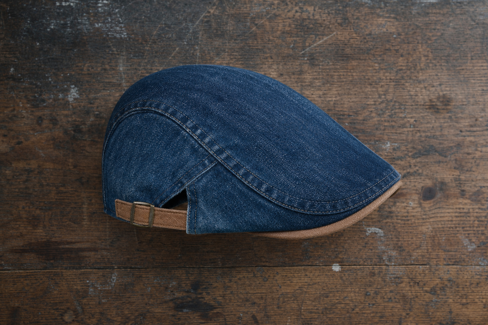
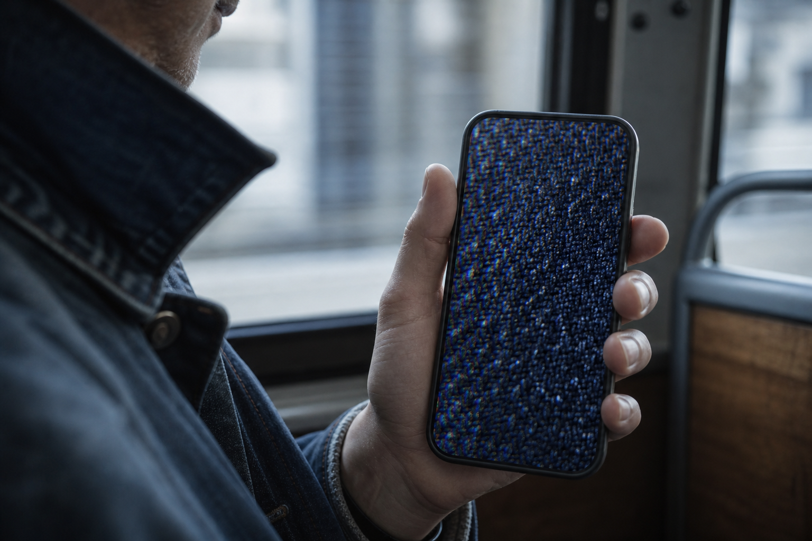
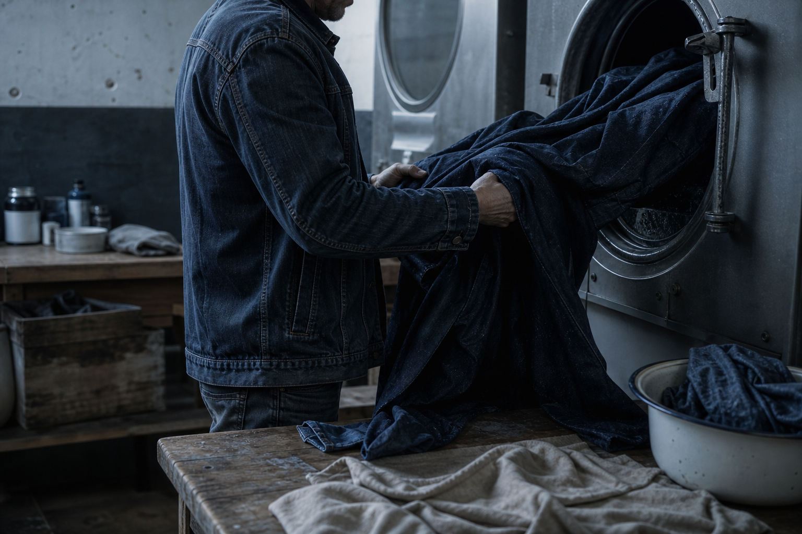
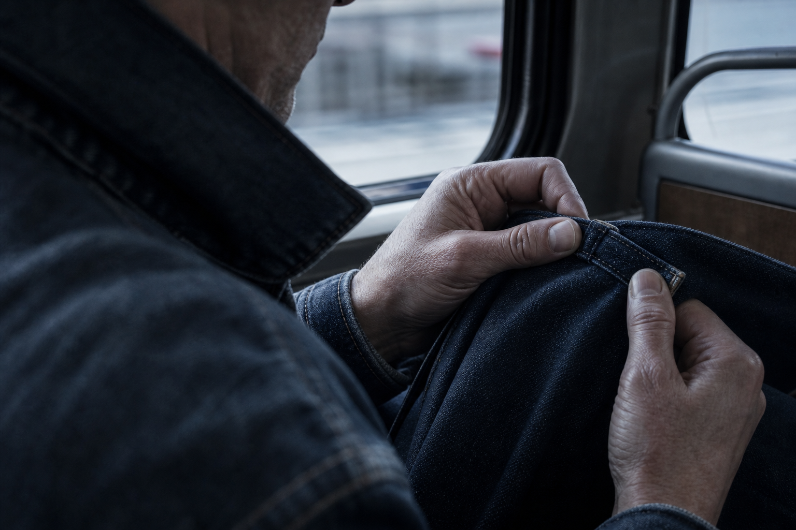

At the folds
Marks where you fold it into a coat pocket. It comes back to shape.
The Washed Denim Collection
Washed denim. One cut, made to fit. $29.99.
6.40 bus, February. He turns the cap over on his knee, thumb along the inside edge, the way you check a thing you have already been let down by three times.
He is waiting for the stiffness. It isn't there. The cloth is already soft, already lived-in, before he has worn it once.
That is the whole argument, and the rest of this page is just the detail behind it: a cap that gives where your head is instead of resisting it.
$29.99 instead of $59.98. Free worldwide shipping, no minimum.

The case
Three caps, three failures, twelve months, three bin bags.
Vincent R., 34, put it plainly before he ever owned one of ours: "J en ai jete trois en un an."
The first left a blue line above his eyebrows on a warm day. The second went out in the rain and came back a different shape, and never went back to the old one. The third caught at a seam every time he pulled it on, so it stayed on the shelf and got binned anyway, unworn.
None of them failed the same way. That is the part worth noticing. Three separate faults means three separate things nobody thought about when the cap was made, and no product photo was ever going to show him which one he was buying.
So he stopped reading the photos and started asking how the thing was put together.
The blocker
Three caps in, he had stopped reading product photos. He was looking for something the photos never carry.
29% of buyers hold back online because they cannot see the material. 19% have binned a cap because it scratched or squeezed. Both numbers describe the same blindness: you can zoom on a photo all you like, it will not tell you the hand of the cloth.
So a screen shows you a shape and hides the only thing that decides whether you keep wearing it. Which is why the rest of this page stops selling the look and takes the cap apart instead: what the denim went through before it was cut, what the shell does when your head is under it, where it wears.
Read the construction. Then decide.

How the cloth is made
Cap number two failed in that exact order.
Raw denim does three things, always in the same sequence. Stiff, then shrinking, then slack. That is the second cap's whole life story: rigid on the first morning, tight after the rain, and shapeless by the time it went in the bin.
The fix is to move the wash to the front. Washed in the piece means the cloth goes through the wash before anyone cuts a panel from it. The shrink has already happened. What you put on your head has finished moving.
So the hand of the cloth is soft from the first wear, not after a season of breaking in. And the size holds through a domestic wash, because there is nothing left to give up. It gives where your head is, on the first cold morning rather than the twentieth.

Failure number one
The constraint: new denim carries more indigo than it can hold. So the cloth is washed before anyone cuts it.
Cap number one gave him a blue line above the eyebrows on a warm afternoon. That is surplus dye, the indigo a new cloth never fixed properly, coming off on the first skin that presses against it.
Washing in the piece deals with it before the shell exists. The cloth goes through the industrial wash as a length of fabric, the surplus goes out with the water, and only then is it cut into panels. Nothing is sitting on the surface waiting for your forehead to take it.
That is also why the denim already looks lived-in when it arrives. The wash happened first.
$29.99, free worldwide shipping
The shape, built
Panels, not a mould. It takes your shape instead of asking you to take its.
A flat cap is two parts. The shell covers the skull; the peak is the front. Cheap caps make the shell stiff so it holds its shape on a shelf, and short and flat where a sports cap runs long and rigid.
Here the panels are assembled into a soft shell. It sits low, the line falling across the forehead rather than perching above it. Nothing to adjust with your hand every ten minutes on a cold platform.
Fold it into a coat pocket and it comes back out without keeping the crease. Store it flat or on a form and it holds. The crease it keeps is the one you give it.
The constraint
Heads are all different. This cap is one cut. Here is how that ends well.
No two heads are the same shape, and a single cut has to sit on all of them. Most caps solve it by making you guess a size on a screen, which is what 57% of buyers hold back over.
The side-adjuster answers it on the head instead. You pull it to where it sits, once, on the first morning. It stays put. There is no size to get wrong.
A measuring tape gives you S at 54-55 cm through XL at 60-61 cm if you want the reassurance. Above 61 cm, write to us before ordering. The tan suede trim runs the inside edge where the cap meets you, and that is the last you think about it.

Month three
Denim ages by taking your shape. That is the point, not the flaw.
Cheap caps get worse. Denim gets specific. It marks at the folds you make, lightens at the friction points where your hand keeps reaching, and takes a patina that belongs to nobody else. A cap that ages like a pair of jeans, not like an accessory that looked best in the photograph.
The wash before the cut is what allows this. The shrink already happened, so the shell moves toward your head instead of away from it.
Cold water, by hand, mild soap. Press it, don't wring it. Dry it flat on a form or an upturned bowl, never on a radiator. No tumble dryer: that is the one thing that deforms the shell for good.
Marks where you fold it into a coat pocket. It comes back to shape.
Lightens where your fingers go, at the peak and the side.
The shrink happened before the cut, so the size holds.
Three caps bought, three caps binned, inside twelve months. One dyed his forehead. One lost its shape. One scratched at the seam, and 19% of buyers in our survey say that is exactly why they stopped wearing theirs.
Against that: one cap at $29.99, half of $59.98. Bought once.
A customer wrote on 21 February: "Trois mois, plusieurs lavages, elle a pris une patine sans se deformer."
Cap number four is not on the list of things binned this year. Cap number five is.
Outside the case
Two customer notes, kept word for word, and 30.000+ satisfied customers behind them.
Vincent R. was in the same year you have just read about. Three caps binned, twelve months, three different failures. His mail is the reason this page was written in the order it was written.
The other note is dated 21 February. Three months in, several washes, and the cap had done the one thing the page has been arguing for: it took the shape of the man wearing it instead of resisting him.
Illustrative customer verbatims, reproduced as received.
J'en ai jeté trois en un an.
Vincent R., 34 ans (verbatim client)
Trois mois, plusieurs lavages, elle a pris une patine sans se déformer.
Avis client, 21 février 2026, noté 5/5
Your words, not ours
Answered flat, including the one where the answer is no.
You have said all five of these out loud already. So here they are in your words, with the short answer under each.
On the last one we are not going to argue. A man measured 61, maybe 61 and a half, and we told him on the phone that the XL would stay tight rather than send him the same cap twice.
Divide it by seasons worn, not by units bought. Three cheap caps binned inside a year cost more than one kept for four.
It is the long cut and the rigid cloth that read old, not the shape. Short peak, soft shell, washed denim: look at a profile photo before you decide.
Cotton denim breathes. A sports cap lined with polyester is the warmer thing on your head.
No. This is not a sports cap and it will not hold on a moving bike. If you want a technical hat, this is the wrong product and we would rather say so now.
Above 61 cm, write to help@ashcroft-flatcaps.com before ordering. The XL sits tight there, and denim gives a little with wear, never enough to rescue a wrong measurement.
100-Day Fit Guarantee
Wear it outdoors, not in front of a mirror.
Cap number four gets a hundred days, and the only test that counts is the one you already know: the 6.40 bus, the cold air, the cap on your head and not in your hands. Try it out there. That is explicitly allowed.
A size exchange is the ordinary case here, not a complaint. We treat it first. And if it never sits right, you get your money back.
Shipping is free worldwide, no minimum. Payments are encrypted and your card details are not stored. Support answers 24/7.
100 days to decide. It sits right, or your money back.
Practical questions
Answered plainly, including the one we have to answer badly.
Cold water by hand, mild soap. Press it, don't wring it, and dry it flat on a form. No tumble dryer. The shrink already happened before the cloth was cut, so the size holds after a domestic wash.
Yes. The shell is soft and comes back out without keeping the crease.
61 cm is the top of the range. The side-adjuster sets the fit, it doesn't add room. Measure first, and write to help@ashcroft-flatcaps.com before ordering rather than after.
Nine in The Washed Denim Collection, all in stock, from an everyday light blue to a burgundy that isn't afraid of colour. New washes get added.
Dispatch within 24 to 48 working hours, then 3 to 6 working days. Free worldwide, no minimum. Order at the top of the range, not the bottom, if you have a date in mind.
Nine washes, one cut
The cloth was washed before it was cut. The shape is set once. The rest is yours.
Everything this page argued is already built into the cap: the shrink happened before the cutting table, the side-adjuster holds the line you set on day one, and the creases arrive where you put them.
So the only thing left is the wash. Nine of them, from the everyday light blue to the burgundy that isn't afraid of colour, plus the Mariner, the Blackthorn, the Cotswold, the Chestnut, the Sherwood, the Admiral and the Onyx. The collection keeps growing. All nine are in stock.
$29.99 instead of $59.98 with the SUMMER OFFER, and buy two, get one free. Free worldwide shipping, no minimum. 100 days to decide, outdoors and not in front of a mirror.
Next week there's another cold morning waiting at the same hour. Turn up with something that gives where your head is.
Choose your wash - 100 days to change your mind